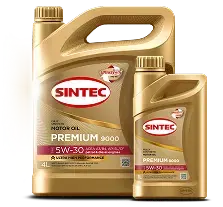
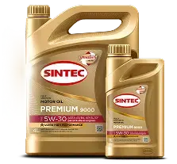

Получи
скидку 50%
На моторные масла
Sintec при покупке
автомобиля*
 

Зачем покупать масло сразу?
Приобретение подержанного автомобиля — ответственный шаг! После покупки важно обеспечить защиту двигателя новым качественным маслом. Масла Sintec — ваш надёжный выбор для продления срока службы мотора и повышения эффективности эксплуатации вашего нового транспортного средства
-
Неизвестная история обслуживания
Прошлый владелец мог пренебрегать регламентом, либо дать ложную информацию при продаже

-
трение жидкостей
Моторное масло теряет свои свойства со временем. Узнать его точный остаточный ресурс, без лабораторных исследований невозможно

-
Риск скрытых проблем
Изношенные жидкости могут маскировать неисправности узлов, либо наличие сторонних компонентов

-
Удаление загрязнений
Свежая замена выводит продукты износа, осадки и влагу
-
Уверенность в дальнейшем эксплуатации
После замены вы точно знаете исходное состояние всех жидкостей и их ресурс

купить на ozon
купить на ozon прямо сейчас
Прямо сейчас антифризы Sintec на OZON с выгодой 15% по промокоду «SINTEC»
купить на OZON